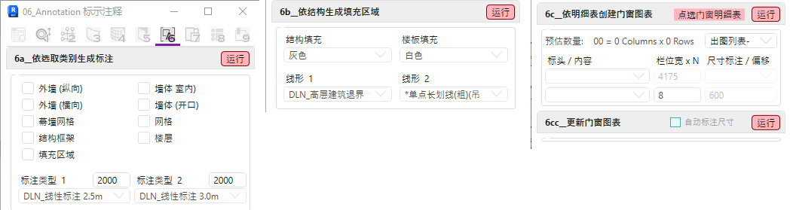

06页签目前已制作三个主要工具:
a. Dimension by Category 依选取类别生成标注 /
Dimension by Element 依选取元件生成标注
解决Revit自带标注工具一次只能标注一个物件的问题
于图纸空间依照所选取的平, 立, 剖面视图自动生成相关标注
或于视图空间选取所需标注的元件和定位辅助线
b. Filled Pattern by Structure 依结构生成填充区域
解决Revit结构与其他模型重叠时绘图顺序出错的问题
依当前视图或所选元件自动生成填充区域
c. Door Legend By Schedule 依明细表创建门窗图表 /
解决Revit仅能生成明细表无法快速制作门窗立面图的问题
Update Door Legend 更新门窗图表
依所选门窗明细表和图例生成或更新门窗图